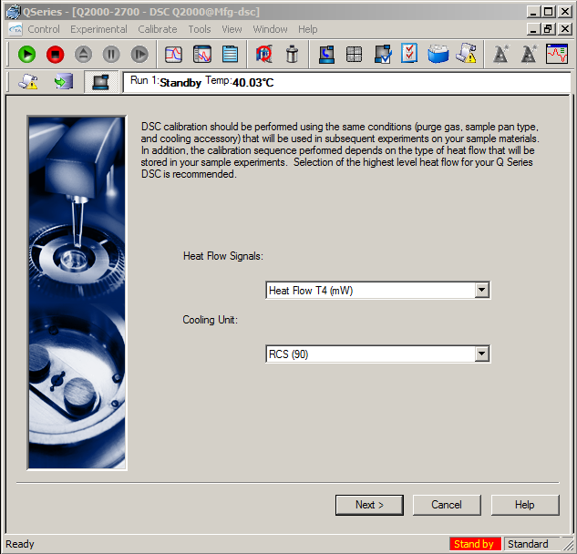
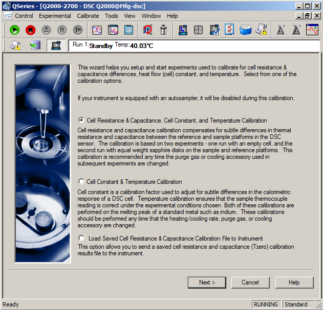
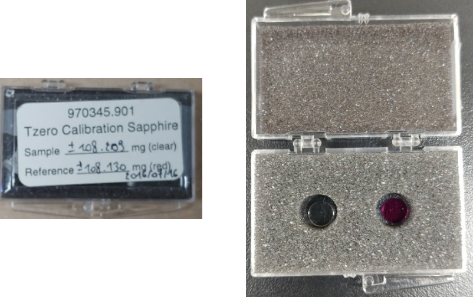

- Calibration
- Cleaning
- Sample preparation
- Characterize Tg
- Export Data
- Errors and issues
Calibration
When to calibrate
For optimum experimental results you will need to perform all DSC calibrations whenever you change one of the following parameters:
First use of a new cell
Purge gas change
Cooling device or accessory change
and also recalibration is recommended once a year and if performance has degraded over time.
Introducing the DSC Calibration Wizard
To calibrate the DSC you can select Calibrate/Calibration Wizard from the main menu to begin the procedure.
The following window will be displayed and select Heat Flow T4 calibration option with the appropriate cooling unit.

Tzero calibration of the DSC Q2000 consists of two separate calibrations.
The first involves running an empty cell and then running two sapphire samples to determine Cell resistance and capacitance.
The second involves running a known enthalpy standard (indium) and evaluating the melting endotherm to determine a cell constant and to calibrate the X-axis temperature.

Cell Resistance & Capacitance, Cell Constant, and Temperature Calibration - This is a full calibration 'first + second'
Cell Constant & Temperature Calibration - This option calibrates the second.
Baseline Run
Calibration to obtain cell resistance and capacitance values involves two experiments.
The first is based on heating an empty cell over the same temperature range that will be used in subsequent sample experiments.
Calibration Range: Select "Heat and Cool calibration" that we typically obtain both heating and cooling data.
Lower Temperature & Upper Temperature: Typical temperature ranges are -180 to 400°C for the LNCS, -90 to 400°C for the RCS90.
Ramp Rate: a rate of 10°C/min is recommended.
Purge Gas & Flow Rate: nitrogen & 50 mL/min
Once all of the experimental parameters are entered, press Next to start the baseline experiment.
Sapphire Run
The second experiment required to obtain Tzero cell resistance and capacitance values involves heating the cell with two equal weight sapphire disks on the sample and reference platforms over the same temperature range and under the same experimental conditions as the previous Baseline Run. Since identical experimental conditions are required, you will not be prompted to enter that information again. You only need to weigh and enter the weights of the sapphire disks.
Sapphire Weights: Two sapphire calibration disks are included in the DSC inventory that is shown in the image below.

Please weighing each disk on a microbalance and entering the weight in the appropriate entry field, place the disk directly on the DSC cell sample or reference positions, and close the cell.
Once all of the experimental parameters are entered, press Next to start the sapphire run experiment.
Cell Constant Setup - Indium Run
The second phase of calibration involves the determination of the cell (enthalpy) constant and the x-axis temperature calibration. This calibration is usually performed using indium and the same ramp rate, purge gas, and pan type as subsequent sample experiments.
Standard/Weight: Indium - melting point 156.6°C, ΔH fusion is 28.71 J/g/ Recommended weight 1 to 5 mg.
Pan Type/Sample & Reference Pan Mass: Aluminum or aluminum hermetic / Enter the weights of the empty sample and reference pans.
Once all of the experimental parameters are entered, press Next to proceed to the next step to start the experiment.
Start and Final Temperature/Heating Rate: 100 to 180° for 5 and 10°C/min 80 to 200°C for 20°C/min and above. Please use Premelt option.
Select the desired Calibration Set that will be used to save the data.
Once all of the experimental parameters are entered, press Next to automatically start the cell constant experiment.
Cell Constant & Temperature Results
An analyzed plot of the melting peak for the metal standard appears at the end of the experiment. If you are satisfied with the analysis, press Next to save the cell constant and temperature calibration results to the instrument. Otherwise, select the Analyze button to display the analysis markers. Reposition these markers at the desired location and select Limits OK.
Verification
Baseline
After calibration run experiment with an empty cell, -80 to 400°C.
The Recommended gap of a signal is < 100 μW.
If there is any problem, re-verify after the cleaning process.
Heat Flow & Temperature
Load 1 to 5 mg of indium to sample pan and run experiment same procedure as calibration.
Calculate melting temperature and heat capacity using TA analysis software and compare the results. Note: Indium - melting point 156.6°C, ΔH fusion is 28.71 J/g. Temperature: < 1°C difference and ΔHlit/ΔHcal; 0.95 ~ 1.10.